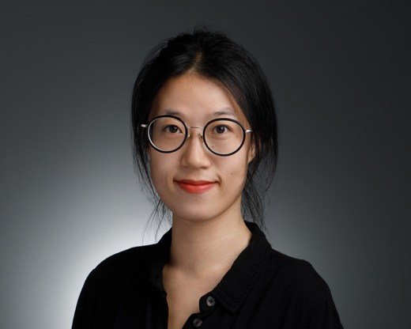

武汉大学 · 人工智能学院Wuhan University · School of Artificial Intelligence
Professor and Doctoral Supervisor, School of Artificial Intelligence, Wuhan University
Deputy Director, Institute of Natural Language Processing · Co-Director, Cognitive Language and Information Lab (CLAIN)
武汉大学人工智能学院 教授、博士生导师
自然语言处理研究所副所长 · 认知语言与信息实验室（CLAIN）联合主任
AI of humanity, by humanity, for humanity: language models that reason, explain, and stay reliable where it matters most, in medicine and finance.
源于人类、协同人类、造福人类：构建会推理、能解释，并在医疗与金融等高风险场景中可靠可信的大语言模型。

Looking for self-motivated postdocs, Ph.D. and master's students, research assistants and interns in NLP, medical AI and financial AI.
长期招收自然语言处理、医疗人工智能、金融人工智能方向的博士后、博士生、硕士生、科研助理与实习生，欢迎自我驱动的同学联系。
How to apply →申请方式 →I joined Wuhan University in May 2025 as a Full Professor at the School of Artificial Intelligence, where I serve as Deputy Director of the Institute of Natural Language Processing and co-direct the Cognitive Language and Information Lab (CLAIN) with Professor Min Peng. My research spans natural language processing, large language model reasoning, interpretability and controllability, multimodal fusion and intelligent agents, with applications in medical AI and intelligent finance. Following the CLAIN vision of AI that is of humanity, by humanity and for humanity, I work on models grounded in human language and knowledge, built through interdisciplinary collaboration, and aimed at real problems in healthcare, finance and society. I am a recipient of the National High-level Young Talent Program (Overseas) and serve as Secretary of the ACL Special Interest Group on Financial Technology (SIG-FinTech).
Before returning to Wuhan I was an Associate Research Scientist and postdoctoral researcher at Yale University with Professor Hua Xu, a postdoctoral researcher at Weill Cornell Medicine, and a Research Associate at the University of Manchester with Professors Sophia Ananiadou and Junichi Tsujii. I received my Ph.D. from Wuhan University in 2020 under Professor Min Peng, and spent a year at the University of Montreal with Professor Jian-Yun Nie.
2025 年 5 月起任武汉大学人工智能学院教授、博士生导师，任人工智能学院自然语言处理研究所副所长，并与彭敏教授共同担任认知语言与信息实验室（CLAIN）主任。研究方向涵盖自然语言处理、大语言模型推理、可解释性与可控性、多模态融合与智能体，以及在医疗人工智能与智能金融中的应用。秉持 CLAIN"源于人类、协同人类、造福人类"的愿景，致力于构建植根于人类语言与知识、通过跨学科协作铸就、并服务于医疗、金融与社会真实问题的人工智能。国家高层次青年人才计划（海外）获得者，现任 ACL 金融科技特别兴趣小组（SIG-FinTech）秘书。
回到武汉之前，曾任耶鲁大学副研究员及博士后（合作导师 Hua Xu 教授）、康奈尔大学威尔医学院博士后，以及曼彻斯特大学研究员（合作导师 Sophia Ananiadou 教授与 Junichi Tsujii 教授）。2020 年于武汉大学获博士学位（导师彭敏教授），其间在蒙特利尔大学访学一年（导师 聂建云教授）。
Reinforcement learning and preference optimization for structured reasoning; making model decisions inspectable and steerable.
面向结构化推理的强化学习与偏好优化；让模型决策可检验、可引导。
Medical foundation models, clinical decision support and mental-health reasoning: Me-LLaMA, MentaLLaMA, MiraMind, SiMing-Bench.
医疗基础模型、临床决策支持与心理健康推理：Me-LLaMA、MentaLLaMA、MiraMind、SiMing-Bench。
Financial LLM benchmarks, agents and misinformation detection: PIXIU, FinBen, FinCon, InvestorBench; ACL SIG-FinTech.
金融大模型基准、智能体与虚假信息检测：PIXIU、FinBen、FinCon、InvestorBench；ACL SIG-FinTech。
Vision-language understanding of procedures and documents; multi-agent frameworks for evaluation and decision-making.
面向流程与文档的视觉语言理解；用于评测与决策的多智能体框架。
Retrieval-augmented generation, knowledge-graph reasoning (Graph-RFT) and text representation with probabilistic explainability.
检索增强生成、知识图谱推理（Graph-RFT）与具备概率可解释性的文本表示。
Cultural meaning in translation (DITING), legal and user-centric benchmarks, and trustworthy evaluation of generative AI.
翻译中的文化内涵（DITING）、法律与用户中心基准，以及生成式 AI 的可信评测。
Open models and benchmarks:开源模型与基准： Me-LLaMA · PIXIU / FinBen · MentaLLaMA · MiraMind · CLAIN on Hugging Face
Synced from Google Scholar on 2026-09-16.数据于 2026-09-16 同步自 Google Scholar。
Nature Medicine · npj Digital Medicine · JAMIA · JBI · AMIA · ICLR · NeurIPS · ICML · ACL · EMNLP · NAACL · ARR · AAAI · KDD · WWW · SIGIR · TOIS · TNNLS · IPM · ACM Computing Surveys
Jie Gong (2025) · Yihuai Xu (2025) · Baojie Qu (2026) · Ruiyu Zhang (2026)龚捷（2025 级）· 许艺怀（2025 级）· 曲保杰（2026 级）· 张睿宇（2026 级）
Jun Yang (2025) · Keying Wu (2026) · Zhentao Li (2026) · Xiudong Chen (2026)杨俊（2025 级）· 吴可莹（2026 级）· 李震韬（2026 级）· 陈秀栋（2026 级）
Mengxi Xiao, Yanlin Song, Xiyang Huang (Ph.D.) · Enze Zhang (M.Sc.)肖梦溪、宋衍霖、黄希扬（博士）· 张恩泽（硕士）
Kailai Yang, Chenghan Yuan, Zheheng Luo, Jennifer Amy Bishop (Manchester) · Zhiyuan Cao, Xinyu Zhou (Yale)杨开来、Chenghan Yuan、Zheheng Luo、Jennifer Amy Bishop（曼彻斯特）· Zhiyuan Cao、Xinyu Zhou（耶鲁）
School of Artificial Intelligence, Wuhan University
Luojia Hill, Wuchang District, Wuhan, Hubei 430072, China
湖北省武汉市武昌区珞珈山 武汉大学人工智能学院，430072